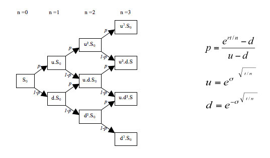

Chapter 0: Overview
Outline:
This chapter will briefly walk through different approaches to derive the Black-Scholes formula. Moreover, we will also introduce the structure of this book and how chapters are related. Hopefully this chapter will give the big picture and intrigue you to explore the milestone stone of the Mathematical Finance.
What is the Black-Scholes Formula?
Blach-Scholes Formula is an analytical option pricing formula which gives a theoretical estimate of the price of European-options.
The most important insight of the Black-Scholes Formula is that an European option can be priced regardless of its expected return from the investors which gives a single price that market participants are likely to agree.
Analytical pricing vs. Numerical pricing
Option pricing includes 2 main approaches: analytical pricing and numerical pricing. Analytical pricing uses mathematics (often in great quantity) to derive an exact option pricing formula based on the model of asset prices, e.g. Black-Scholes Formula. On the other hand, numerical pricing uses computers and many repetitions of a simple procedure to arrive at an estimated option price, e.g. Monte Carlo Simulation. Note that Exact analytical solutions are rare, most of the analytical pricing formula have no closed-form solutions. Therefore, although numerical pricing may not be as elegant as analytical pricing, it is still widely used to price complex derivatives other than European options.
The Big Picture: How to derive the Black-Scholes Formula?
There are many ways to derive or interpret Black-Scholes Formula. The most common ways are 1) Black-Scholes Equation, 2) Cox and Ross Discounted Expectation, 3) Cox, Ross and Rubinstein Binomial Option Pricing. We now present summaries of these three methods.
1. Black-Scholes Equation (1973)
2. Cox and Ross Discounted Expectation (1976)
3. Cox, Ross and Rubinstein Binomial Option Pricing (1979)

The Structure of this book
To build up the intuition of the Black-Scholes Formula, instead of following the timeline, we will learn the above 3 derivations in the reverse chronological order.
We first introduce the Binomial Option Pricing Approach.
- Chapter 1: The Tree Approach I -- Binomial Branch starts by modeling the asset as well as the derivative price using a 1-step binomial model, i.e. Binomial Branch. It gives us the simple intuition of replication arguments and the risk-neutral probabilities.
- Chapter 2: The Tree Approach II -- Binomial Tree further extend the one-step binomial model to a J-step Binomial Model, i.e. Binomial Tree. This model will give us approximations to Black-Scholes pricing.
Next we explore the Discounted Expectation Approach
- Chapter 3: Review of Probability
- Chapter 4: Martingale Approach
- Chapter 5: Pricing Foreign Exchange and Equities with Dividends
- Chapter 6: Derive the Black-Scholes Formula by the Martingale Approach
Then we derive the Black-Scholes Formula by solving the Black-Scholes Equation.
- Chapter 7: Stochastic Differential Equations and Ito's lemma
- Chapter 8: Derive the Black-Scholes Partial Differential Equation
- Chapter 9: Derive the Black-Scholes Formula from the Black-Scholes Partial Differential Equation
Last but not least, we discuss the basic implications of the Black-Scholes Formula by performing simple asympototic analysis. We will also briefly cover the topics such as Implied Volatility (Chapter 10) and Greeks (Chapter 11). This section is very important because it helps us understand the behaviour of the Black-Scholes Formula which is the basis of hedging and risk management.
- Chapter 10: Asymptotic Analysis of the Black-Scholes Formula and Implied Volatility
- Chapter 11: Deriving Greeks
Without further ado, let's get started.